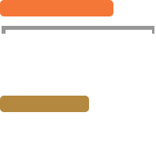
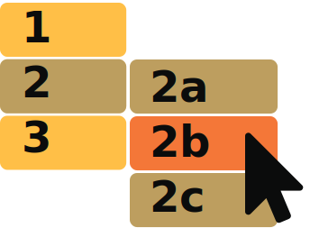
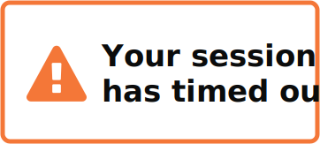
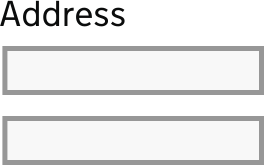

Don't demand precision
Buttons with a small hit area can be frustrating for motor disability users who may not be able to control a mouse or keyboard very well.
Do give form fields space
Don't bunch interactions together
Having lots of actions near each other increases the risk of a user taking the wrong action by mistake.
Do design for keyboard or speech only use
Don't make dynamic content that requires a lot of mouse movement
Some motor disability users may not use a mouse or may use an assistive technology that functions like the tab key on a keyboard. Make sure all your content is accessible by keyboard only.
Do design with mobile and touchscreen in mind
Don't have short time out windows
Using a computer can be tiring for motor disability users and they may need to take frequent breaks. A short time-out period means they will probably have to start again after taking a break.
Do provide shortcuts
Don't tire users with lots of typing and scrolling
It can be difficult for users who find controlling a computer hard to keep their place on long pages and form fields.